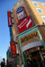
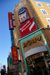

Shizuoka: another modern town. Bursting with busy karaoke places, signs and lights everywhere, and a dinosaur.

Shizuoka: another modern town. Bursting with busy karaoke places, signs and lights everywhere, and a dinosaur.


Train stations are clean and efficient.


Bullet trains, or Shinkansen, come in various flavours. The 500 series looks like a red-eyed shark.
On the edge of the platform are red dots. When the train stops, the driver opens the door and the red dot for his type of train is under his nose. And check out the leg room.

There are vending machines everywhere.
I saw this on the subway. I'm sure it was telling me something about the fashion industry...
The cable train in Koyasan whisks you up the hill at a 45-degree angle.


We say 'hi' from the Nagoya Subway. Announcements and maps are in Japanese and English. Its easy and cheap to get around.
People cycle everywhere - but mainly on the pavement with the pedestrians. Keep your eyes open. Even with this much snow around there were still people riding.
On my way back I got great views of Siberia and beyond.